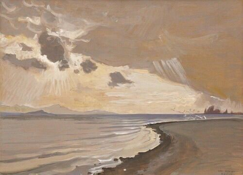

Contact Me :


a bit about me :
Renia Profile
ini adalah About Me section
Saya lahir dengan nama lengkap Renia Rahma Dewi. Alamat saya di Tegal, Ds. Babakan Kec. Kramat Kab.
Tegal. Saya anak nomor 1 dari 0 bersaudara tidak berkakak dan tidak beradik. Introvert tapi kata orang social butterfly.
Saya orang yang bersemangat tapi kalau dalam keramaian bisa tiba-tiba lost energy. Saya lahir di tegal, 18 oct pada bulan ramadhan, kata mama sih.
Saya tidak suka tantangan dan tetap menjalani hidup meski sungpah berat banget iniii. Tapi di luar itu, saya menikmati segala sesuatu yang terjadi di hidup saya.
Saya berusaha untuk tetap bersyukur dan mengambil sisi positifnya, menjadikannya pengalaman agar bisa belajar.
Saya adalah individu lumayan kreatif dan inovatif, selalu mencari cara baru untuk memberikan kontribusi positif dalam setiap situasi meskipun sering tanya chat GPT.
